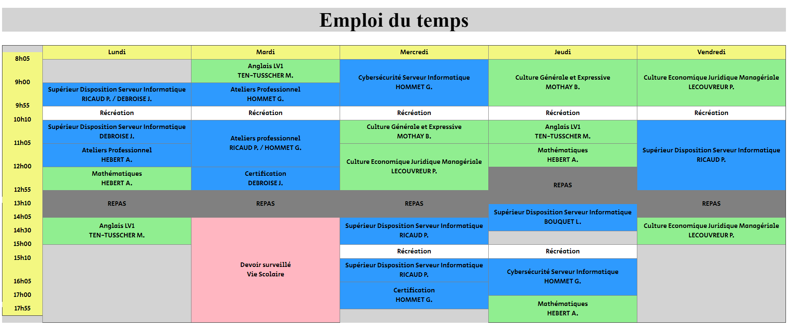
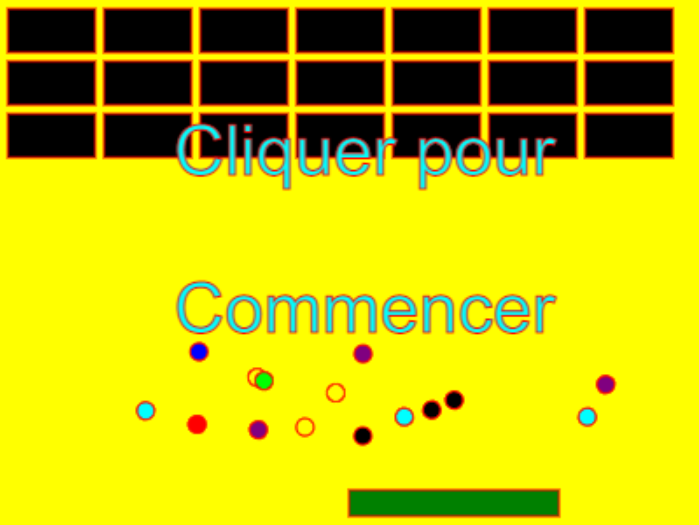
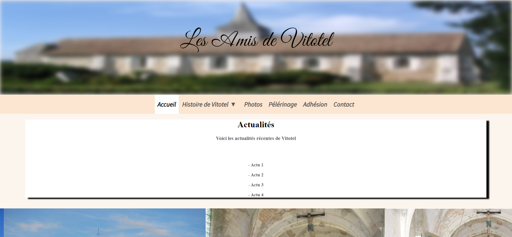
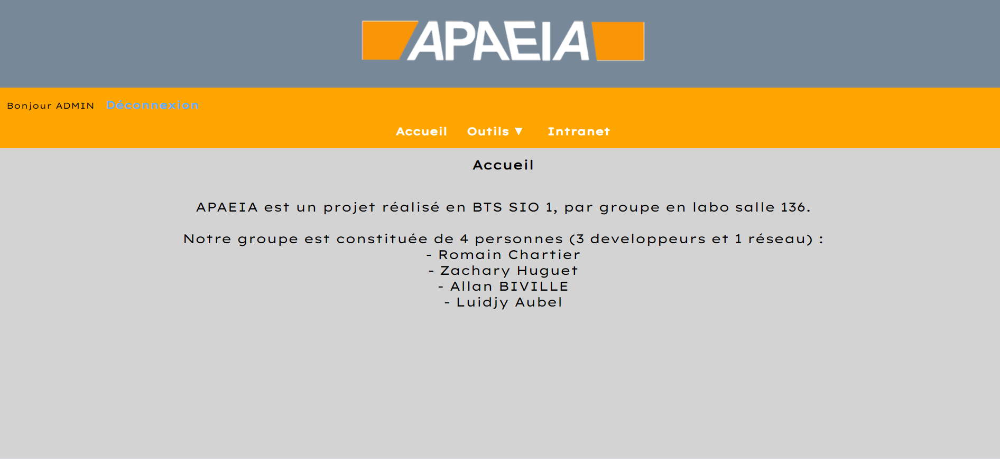
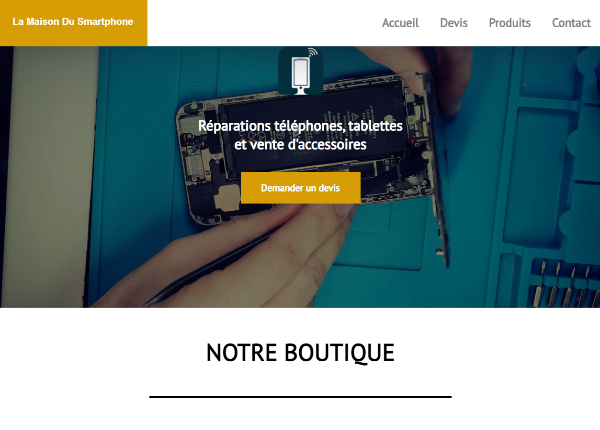
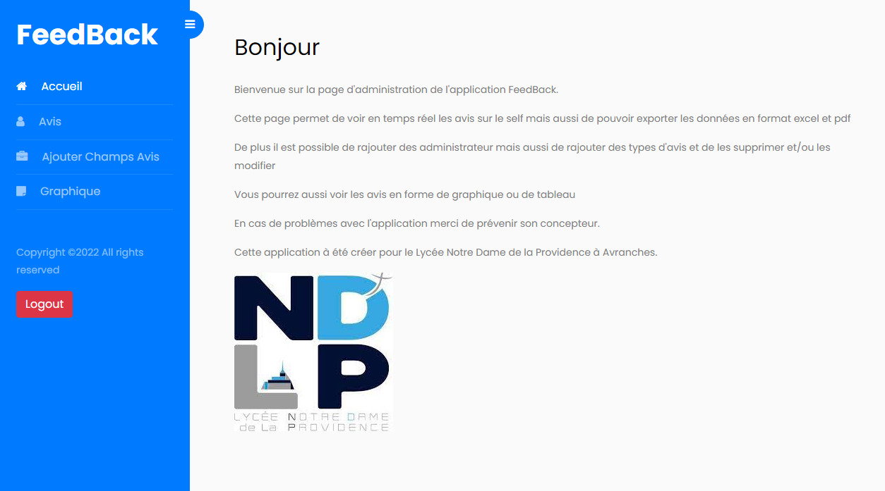

Présentation

Bienvenue sur le portfolio de Allan BIVILLE,
actuellement étudiant en deuxième année
d’un brevet de technicien supérieur SIO
(Services Informatiques aux Organisation)
au sein de l’établissement Notre Dame De La Providence à Avranches.
Ayant 19 ans et obtenu mon baccalauréat professionnel
Systèmes Numériques avec l’option RISC
(Réseaux Informatiques et Systèmes Communicants),
dans l’établissement La Providence à Saint-Malo;
j’ai décidé de poursuivre mes études vers un brevet
de technicien supérieur pour y découvrir
et acquérir des compétences ainsi que des bases dans le réseau,
le développement, l’informatique, etc…
Compétences
Réseaux
Proxmox (Interface + Création machine virtuelle (VM)
Cisco Packet Tracer
PuTTY
Mise en place Active Directory
Gestions des unités d'organisations (OU)
Gestions des groupes d'utilisateurs
Création de stratégies (GPO)
Création de script de connexion (.bat)
Mise en place d'un serveur d'impression
Déploiement imprimante via stratégies
Création de dossier personnelles et commun via stratégies
Mappage de lecteurs réseau via stratégies
Configuration / Mise en place d'un serveur DHCP
Réplication d'un AD
Configuration routeur avec wifi
Programmation
C Sharp (C#)
MySQL
JavaScript (JS)
PHP
Python
HTML
CSS
Wamp
MariaDB
Git / GitHub
Windows
Debian (Mode Console)
Lubuntu
Kali-Linux
Certifications
Certifié PIX (555 pix)
22 janvier 2021 --> 22 janvier 2024
INFORMATIONS ET DONNÉES
Mener une recherche et une veille d’information : Niveau 5
Traiter des données : Niveau 3
Gérer des données : Niveau 3
COMMUNICATION ET COLLABORATION
Interagir : Niveau 4
Partager et publier : Niveau 4
Collaborer : Niveau 5
S'insérer dans le monde numérique : Niveau 4
CRÉATION DE CONTENU
Développer des documents textuels : Niveau 3
Développer des documents multimedia : Niveau 3
Adapter les documents à leur finalité : Niveau 4
Programmer : Niveau 4
PROTECTION ET SÉCURITÉ
Sécuriser l'environnement numérique : Niveau 3
Protéger les données personnelles et la vie privée : Niveau 3
Protéger la santé, le bien-être et l'environnement : Niveau 4
ENVIRONNEMENT NUMÉRIQUE
Résoudre des problèmes techniques : Niveau 5
Construire un environnement numérique : Niveau 5
Télécharger certificat
Certifié MOOC
PANORAMA DE LA SSI - 80%
SECURITE DE L'AUTHENTIFICATION - 84%
SECURITE SUR INTERNET - 90%
SECURITE DU POSTE DE TRAVAIL ET NOMADISME - 84%
Télécharger certificat
CyberSécurité
Compréhension Outils PIA
Modification d'un PIA
Création d'un PIA
OpenPGP (Logiciel de chiffrement)
Thunderbird (Logiciel de mail)
Kleopatra (Serveur de clés)
Projets
Emploi du temps réalisés en HTML en cours avec Mr BOUQUET.
Casse-brique réalisés en JavaScript en cours avec Mr RICAUD.
Site réalisés en groupe, en cours avec Mr BOUQUET pour l'association VITOTEL.
INTRANET d'un projet en groupe, fait en classe avec Mr HOMMET, pour but de refaire l'architecture informatique de l'entreprise.
Site web pour une entreprise, réalisés en stage, sous symfony 5 avec Zachary Huguet.
Projet Feedback pour la restauration de notre lycée

Documentation
Veille
Technologique
Sujet : Les Failles Webs
Voir le contenu de la veille